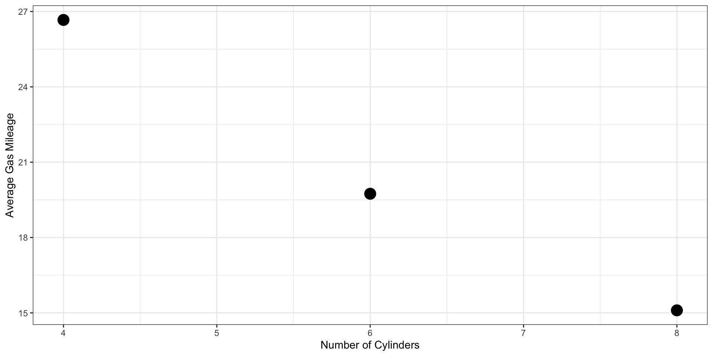
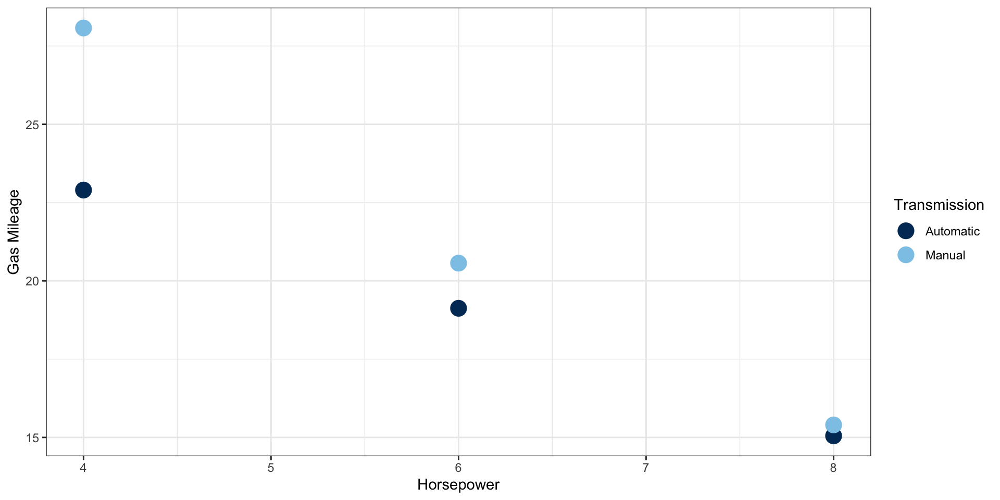
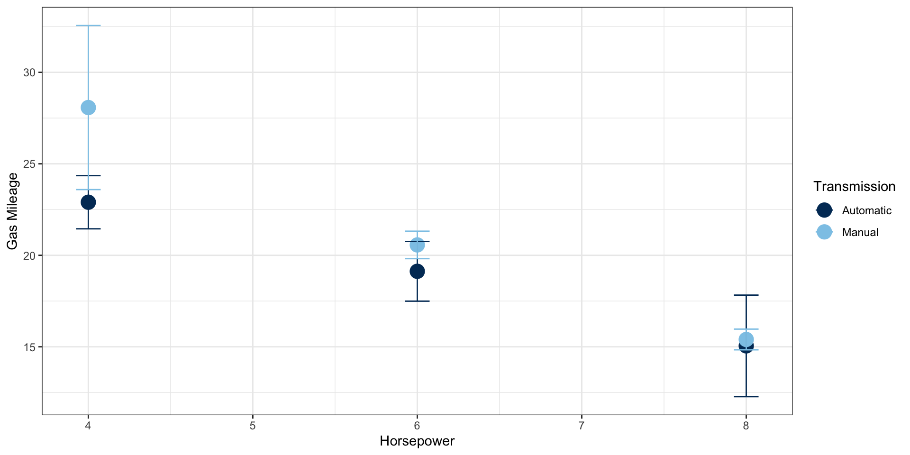

Review: Summary Statistics
STA4173: Biostatistics
Introduction
In this lecture, we will review summary statistics
Continuous variables
- Mean
- Median
- Percentiles / quartiles
- Variance and standard deviation
- Interquartile range
Categorical variables
- Count
- Percentage
We will also review some methods of data visualization
- Histogram
- Bar chart
- Scatterplot
Summary Statistics: Introduction
In this course, we will review formulas, but we will use R for computational purposes
Remember to refer to the lecture notes for specific code needed
Code is also available on this course’s GitHub repository
We can use base R for some things, but other things we will use the
tidyverseandjanitorpackages.If we need to install packages, we use the
install.packages()function,
- To call packages in, we use the
library()function,
Summary Statistics: Mean
- Definition: sample arithmetic mean
\bar{x} = \frac{\sum_{i=1}^n x_i}{n} = \frac{x_1 + x_2 + ... + x_n}{n}
- R syntax:
Summary Statistics: Mean
- The following data represent the first exam score of 10 randomly selected students in STA2023. Find the average exam score.
Summary Statistics: Mean
- The following data represent the first exam score of 10 randomly selected students in STA2023. Find the average exam score.
- What happens to the mean if there is an extreme observation?
Summary Statistics: Variance and Standard Deviation
- Definition: sample variance
s^2 = \frac{\sum_{i=1}^n x_i^2 - \frac{(\sum_{i=1}^n x_i)^2}{n}}{n-1}
- Definition: sample standard deviation
s = \sqrt{s^2}
- R syntax:
Summary Statistics: Variance and Standard Deviation
- The following data represent the first exam score of 10 randomly selected students in STA2023. Find the variance and standard deviation.
Summary Statistics: Variance and Standard Deviation
- The following data represent the first exam score of 10 randomly selected students in STA2023. Find the variance and standard deviation.
[1] 107.1111[1] 10.34945- What happens to the five number summary if there is an extreme observation?
Summary Statistics: Median
Definition: median
The value that lies in the middle of the data when arranged in ascending order.
If n is odd, then the median is literally the middle number.
If n is even, then the median is the average of the two middle numbers.
R syntax:
Summary Statistics: Median
- The following data represent the first exam score of 10 randomly selected students in STA2023. Find the median exam score.
Summary Statistics: Median
- The following data represent the first exam score of 10 randomly selected students in STA2023. Find the median exam score.
- What happens to the median if there is an extreme observation?
Summary Statistics: Percentiles
Definition: kth percentile, Pk
- k% of the observations in the dataset are less than or equal to that value.
- R syntax:
Summary Statistics: Percentiles
- The following data represent the first exam score of 10 randomly selected students in STA2023.
- What is the 45th percentile?
- What is the 90th percentile?
Summary Statistics: Quartiles
Definition: quartiles
- Values that divide the dataset into fourths, or four equal parts: P25, P50 (median), P75
Definition: five number summary
- Minimum, P25, P50 (median), P75, maximum
- R Syntax:
Summary Statistics: Quartiles
- The following data represent the first exam score of 10 randomly selected students in STA2023. Find the five number summary.
Summary Statistics: Quartiles
- The following data represent the first exam score of 10 randomly selected students in STA2023. Find the five number summary.
0% 25% 50% 75% 100%
62.00 71.75 79.50 87.00 94.00 - What happens to the five number summary if there is an extreme observation?
Summary Statistics: Interquartile Range
Definition: interquartile range
- A measure of the spread of the middle half of the data
- R syntax:
Summary Statistics: Interquartile Range
- The following data represent the first exam score of 10 randomly selected students in STA2023. Find the IQR.
Summary Statistics: Interquartile Range
- The following data represent the first exam score of 10 randomly selected students in STA2023. Find the IQR.
- What happens to the five number summary if there is an extreme observation?
Summary Statistics: Frequency Tables
When we are dealing with categorical data, we summarize using frequency tables.
- We are interested in the count and percentage
e.g., from the UWF Fact Book, in Fall 2021, there were
- 1273 (14.4%) freshmen
- 1349 (15.2%) sophomores
- 2431 (27.4%) juniors
- 3807 (43.0%) seniors
R syntax:
Summary Statistics: Frequency Tables
Consider the Motor Trends car road tests data, built into R.
The data was extracted from the 1974 Motor Trend magazine, and includes aspects of car design and performance for 32 cars (1973-74 models).
Summary Statistics: Frequency Table
- Let’s find the frequency tables for the number of cylinders and the type of transmission (automatic vs. manual),
Summary Statistics: Frequency Table
Let’s find the frequency tables for the number of cylinders and transmission type together.
First, with column percentages,
- e.g., what percentage of automatic transmissions have an engine with 8 cylinders?
Summary Statistics: Frequency Table
Let’s find the frequency tables for the number of cylinders and transmission type together.
Next, with row percentages,
- e.g., what percentage of engines with 8 cylinders have automatic transmissions?
Data Visualization: Introduction
When presenting results to others, sometimes it is helpful to create a visualization.
Continuous data:
- Histogram (one variable)
- Scatterplot (two variables)
Categorical data:
- Bar charts
Related to analyses:
- Confidence intervals
- Regression lines
We can also use color to incorporate other variables
- e.g., scatterplot with weight on y-axis, age on x-axis, markers colored by diabetic status
Data Visualization: Introduction
We will use the
ggplot2package for most of our graphing needs.- This package is loaded in with the
tidyversepackage.
- This package is loaded in with the
A good reference book is the official
ggplot2: elegant graphics for data analysis text.- You can buy a hard copy, however, it is available online for free.
I will often google keywords + ggplot2 and look for examples that provide code.
e.g., “histogram ggplot2” led me to this website
e.g., “change color of dot ggplot2” led me to this website
Sometimes I have to look at several links before I find what I am looking for.
Data Visualization: Introduction
- We start with the
ggplot()function to specify our underlying canvas.

Data Visualization: Introduction
- We will use the
tidyversepipe operator (%>%) to pipe data into theggplot()function.
- Then, we will specify the aesthetics using
aes()inside ofggplot().
Data Visualization: Introduction
We will add elements to our graph using
geom_functions.geom_line()creates a linegeom_point()creates a scatterplotgeom_bar()creates a bar chartgeom_text()puts text on the graph- You can find a list of
geom_functions on thetidyversewebsite
The order that you add them matters!
geom_line()+geom_point()= points on top of linegeom_point()+geom_line()= line on top of points
Data Visualization: Introduction
We can also customize every aspect of our graphs.
e.g., the default background is gray, but I personally do not like it, so I typically use
theme_minimal()ortheme_bw()to give a white backgrounde.g., we can increase the font size to make things readable
e.g., we can specify colors for: markers (dots/points), outline of a bar chart or histogram, filling of a bar chart or histogram, lines, text, etc.
There are additional functions within other (non-
tidyverse) packages that will help us with customization.We can put graphs together using the
ggarrange()function in theggpubrpackageWe can use
geom_emoji()from the theemoGGto display emojis in graphs :)
Data Visualization: Introduction
I do not expect you to become an expert in data visualization
As with other R code, I will provide basic code during lecture
I do encourage curiosity and exploring further
R is a very, very powerful tool for graphing!
Even before I was An Official R Programmer©, I used
ggplot2to construct graphs.Other programs are just not great. :(
Today we will look at graphs that go along with summary statistics, but we will learn other ways to graph data as we progress through the semester.
Data Visualization: Histogram
Data Visualization: Histogram
Data Visualization: Histogram
Data Visualization: Histogram
Data Visualization: Histogram
Data Visualization: Scatterplot
Data Visualization: Scatterplot
Data Visualization: Scatterplot
Data Visualization: Scatterplot
Data Visualization: Scatterplot
Data Visualization: Plot of Means
Data Visualization: Plot of Means

Data Visualization: Plot of Means
means <- mtcars %>%
group_by(cyl, am) %>%
summarize(mean = mean(mpg)) %>%
ungroup()
means %>%
ggplot(aes(y = mean, x = cyl, color = as.factor(am))) +
geom_point(size = 5) +
labs(x = "Horsepower",
y = "Gas Mileage",
color = "Transmission") +
scale_color_manual(labels = c("Automatic", "Manual"),
values = c("#003865", "#8DC8E8")) +
theme_bw() Data Visualization: Plot of Means

Data Visualization: Plot of Means
means <- mtcars %>%
group_by(cyl, am) %>%
summarize(mean = mean(mpg),
sd = sd(mpg)) %>%
ungroup()
means %>%
ggplot(aes(y = mean, x = cyl, color = as.factor(am))) +
geom_point(size = 5) +
geom_errorbar(aes(ymin=mean-sd, ymax=mean+sd), width = 0.15) +
labs(x = "Horsepower",
y = "Gas Mileage",
color = "Transmission") +
scale_color_manual(labels = c("Automatic", "Manual"),
values = c("#003865", "#8DC8E8")) +
theme_bw() Data Visualization: Plot of Means

Data Visualization: Bar Chart
Data Visualization: Bar Chart
Wrap Up
Today we have reviewed how to describe data.
- Summary statistics
- Basic data visualization
There is not a one-size-fits-all graph!
- Always keep in mind what is the story we are trying to tell and what aids in our explanation.
In lab, we will learn how to create a table of descriptives.
Next class, we will review statistical inference.
- Confidence intervals
- Hypothsis testing